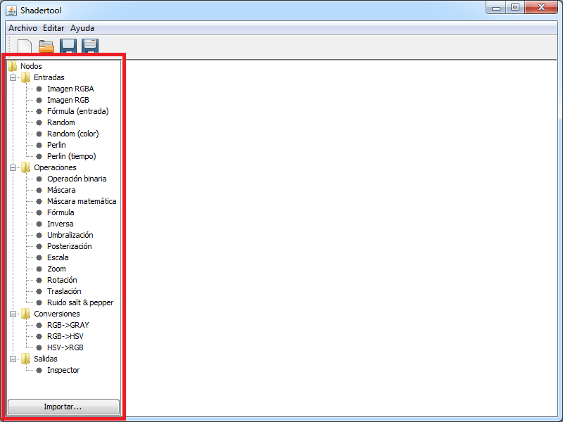

Árbol de nodos
En el árbol de nodos se almacenan todas las operaciones. Éstas se dividen en operaciones de:
- Entrada: entradas de datos (por ejemplo, imágenes).
- Operaciones: operaciones morfológicas (por ejemplo, máscaras, transformadas, etc.).
- Conversiones: conversiones de imagen (por ejemplo, RGB -> HSV).
- Salidas: salidas de datos (por ejemplo, el inspector, que permite visualizar imágenes).
